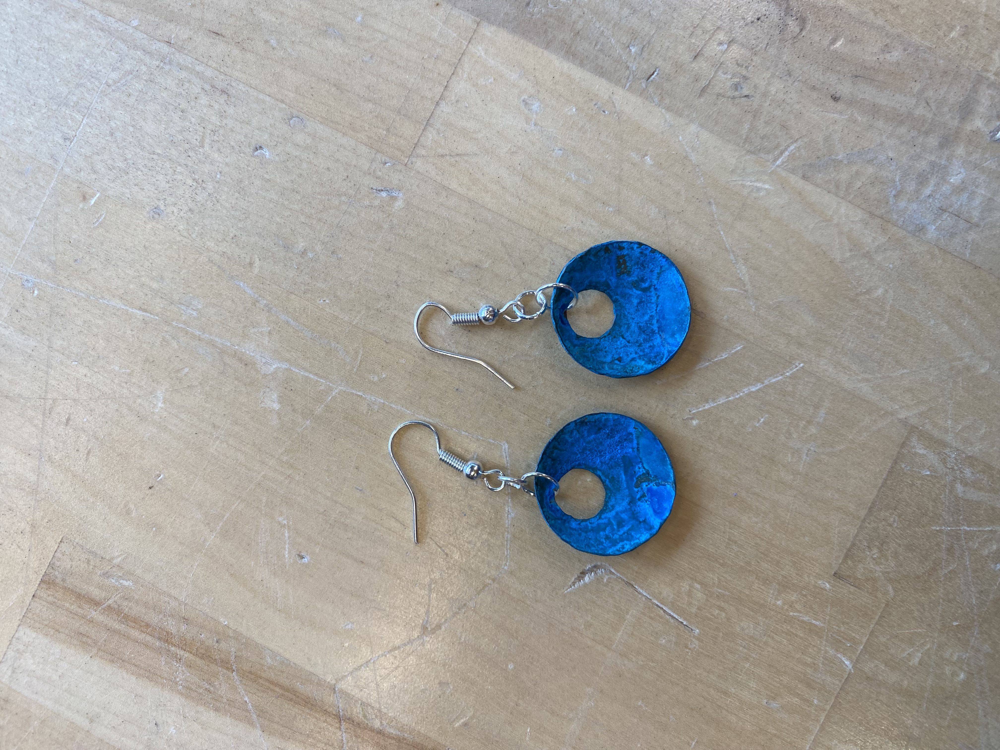
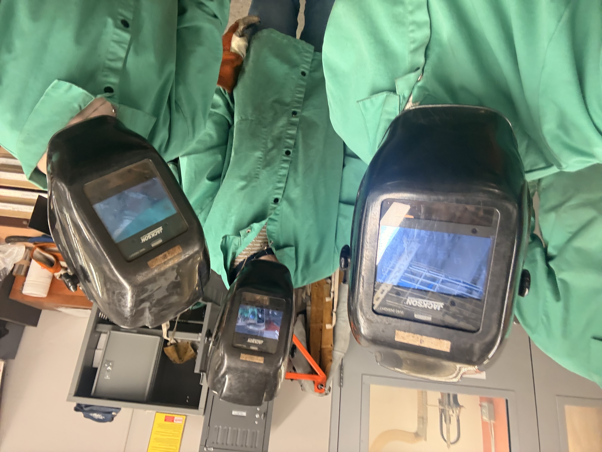
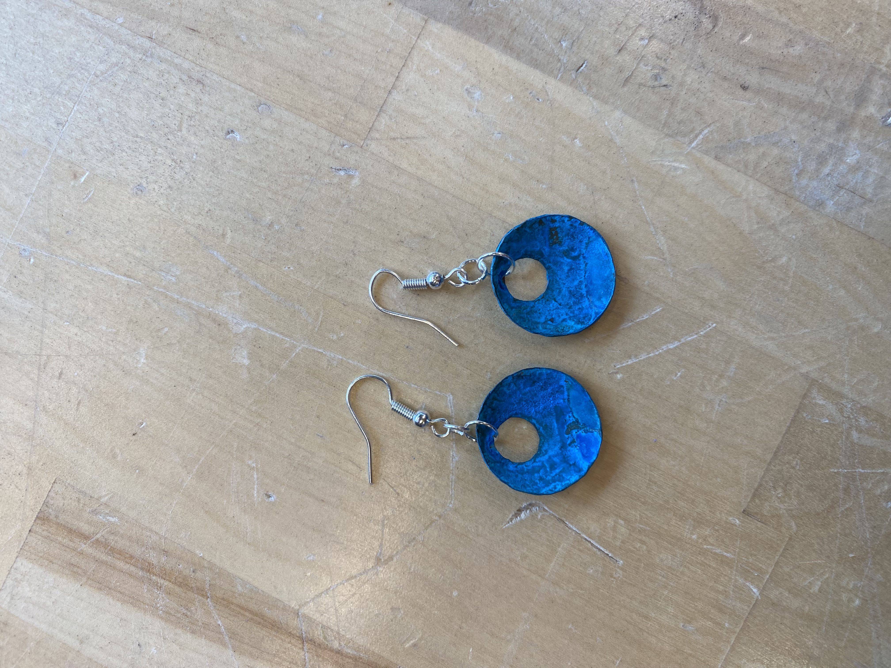
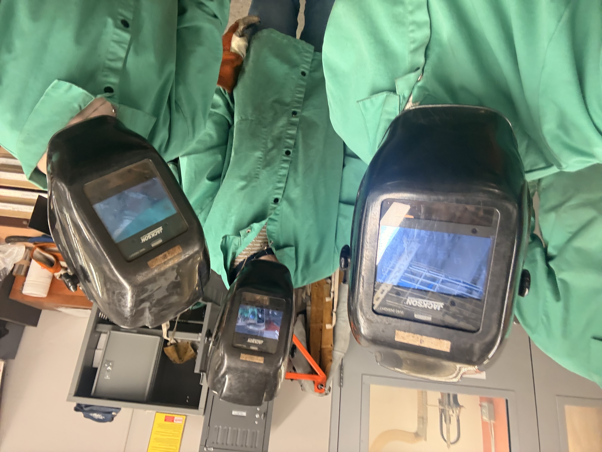

Hi! I'm Adriana.
- I study ECE and Robotics at Carnegie Mellon University.
- I am passionate about machine learning, integrated circuit design, computer architecture, embedded systems, robotics, and biotechnology.
- I love research! I have worked in the CMU Micro Robotics Lab, where I lead an independent project designing autonomous fish-like robots from the ground up. Recently, I have been working on building a methodology for circumlunar path planning with CMU Professor and Astrobotic founder Red Whittaker.
- This past summer, I worked at Draper Laboratories as an Undergraduate Systems Engineer. Here, I learned what is really inside an inertial measurement unit, how to contribute to a large codebase, and what goes into verifying critical hardware.
- This spring, I am studying at EPFL in Switzerland! I am super excited!
- I designed this website using HTML and CSS.


 


